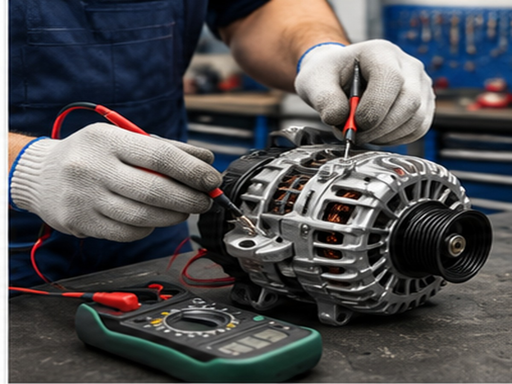
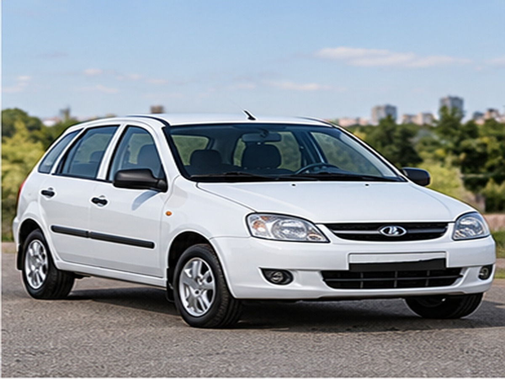
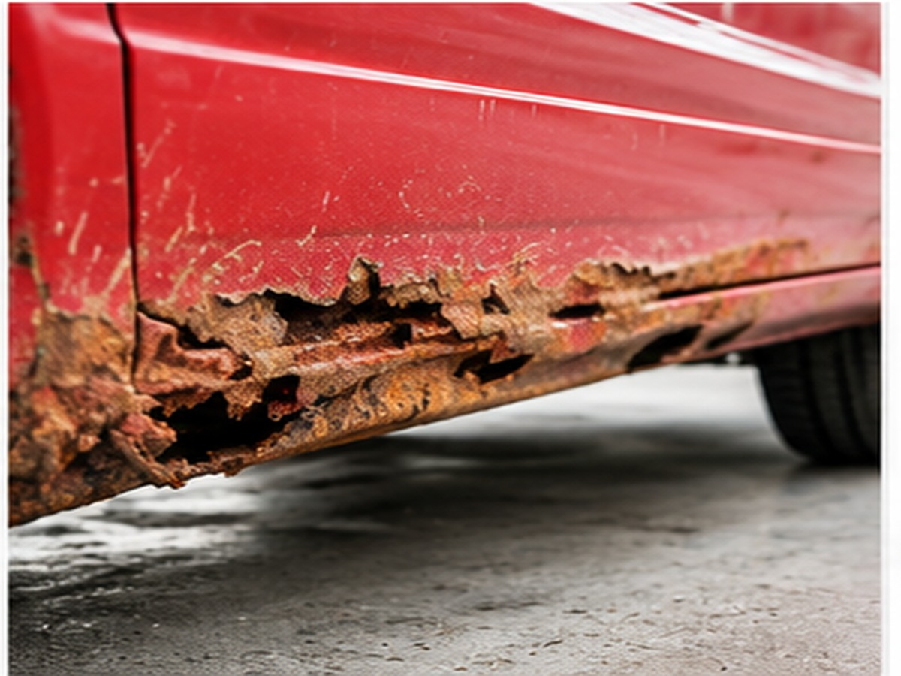

Охлаждение
Двигатель перегревается
Температура растёт выше обычной, вентилятор не включается или есть утечка.

2004–2018 • хэтчбек / универсал • 1.4 / 1.6 л
Используйте поиск по базе неисправностей, если появился похожий симптом.
Используйте поиск по базе неисправностей, если появился похожий симптом.
Используйте поиск по базе неисправностей, если появился похожий симптом.
Используйте поиск по базе неисправностей, если появился похожий симптом.

Температура растёт выше обычной, вентилятор не включается или есть утечка.

Слышны щелчки или удары на неровностях, руль может ощущаться менее собранным.
Выбор сохранится в браузере.
Сохраняйте неисправности и руководства кнопкой ♡.